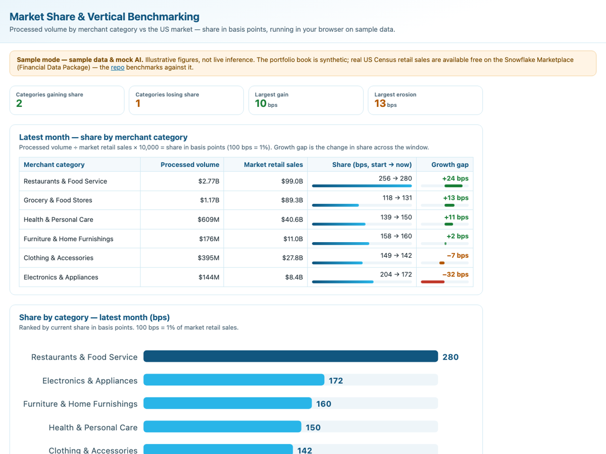
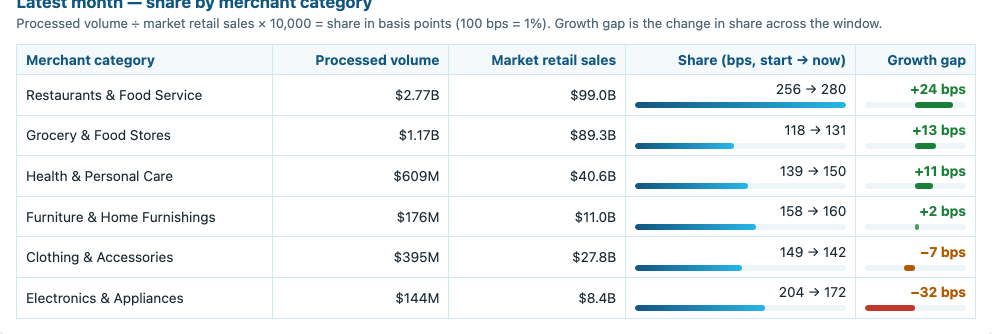

01 / See
A latest-month table of processed volume, market sales, and share in basis points per merchant category, plus a card gallery of verified share notes badged Verified or Needs review.
SNOW PACK · FINANCIAL SERVICES
Know where you’re winning and losing share by merchant vertical. This pack benchmarks a processor’s processed volume against the whole US market — as share in basis points, with a growth gap — and every number is pulled from governed data a verifier can stand behind.
Synthetic book in sample mode; the market side is real US Census retail sales in deploy mode. Mock AI responses are illustrative, not live inference.
You process billions in volume, but is your restaurant book growing faster or slower than the restaurant market? Internal dashboards show your own trend; they can’t tell you whether you’re gaining or losing share in a vertical. This pack answers that per category — benchmarked against real market retail sales — and a verification step catches any claim the data doesn’t support, so a share number is safe to send to a portfolio owner.
A latest-month table of processed volume, market sales, and share in basis points per merchant category, plus a card gallery of verified share notes badged Verified or Needs review.
Explore in your browser on synthetic data — no account, no install. Or run one SQL script in your own account to build the same objects on synthetic tables.
Mount the free Financial Data Package from the Marketplace, run setup.sql, and the same app benchmarks against real US Census retail sales. Swap in your settlement data to go live on your own book.
share_bps = volume / market_sales × 10,000, the core acquirer KPI.
